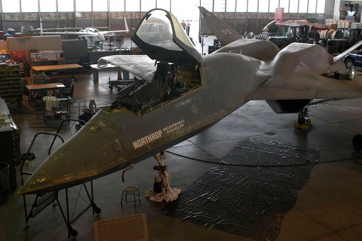

Legacy
Today they are on display at a museum, reduced to a relic in the later part of the 20th century. Yf-118g has found itself in the National Museum U.S. Air Force Dayton, Ohio. The fate of the yf-23 on the other hand is not over. While the U.S. has chosen the F-22 Raptor, Japan is developing a 5th or 6th-generation aircraft and calls out companies to complete their project. One such company Northrop Grumman has responded and could make a modern version of the yf-23. As for the first two aircraft, one of the aircraft has found its way to Dayton, Ohio. While the other is at Zamperini Field, Torrance, California.

| yf-118g | Following the bird of prey's last flight in 1999, breakthroughs and lessons learned throughout the program soon found their way to another platform. That being the X-45A Unmanned Combat Air Vehicle. As for the aircraft itself, it can be seen suspended above a F-22 Raptor at Wright-Patterson Air Force Base. |
| yf-23 | In 2004, Northrop proposed a YF-23-based bomber for the USAF need for an interim bomber. Competeing with the FB-22 and B1-R, but it was canned in 2006. The USAF has moved on to the Next-Generation Bomber and Long Range Strike Bomber program. Japan launched a program to develop a domestic 5th/6th generation, reaching out several companies. Northrop responded, speculation that it could offer a modernized version on the YF-23 to Japan. |